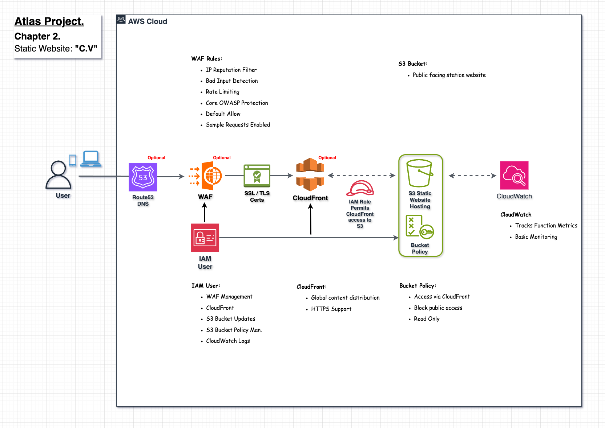
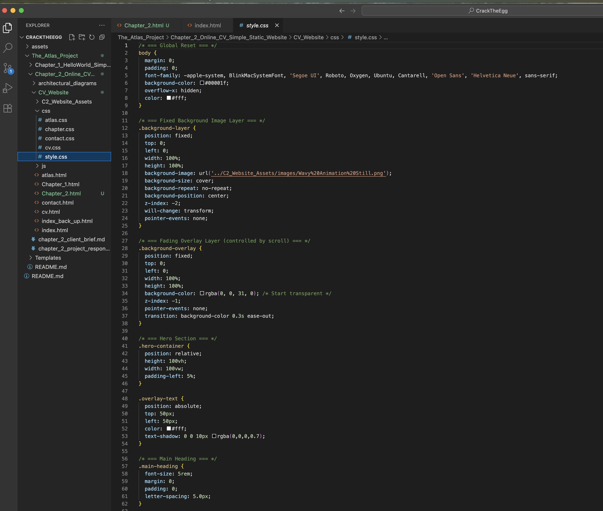

Chapter 2 – Static Website
Project Summary
This chapter showcases how to host a secure, scalable, and globally distributed static website using AWS. The portfolio site itself serves as the project output, demonstrating core cloud skills across S3, CloudFront, Route 53, and WAF. Built with modular HTML and CSS, the site is lightweight, responsive, and designed for long-term maintainability and growth.
Architectural Diagrams
The following high-level diagram illustrates the architecture behind the S3-hosted static website. It highlights the core AWS services involved — including S3, CloudFront, Route 53, WAF, and IAM — and demonstrates how they interact to deliver a secure, performant, and highly available static site. Logical separation of components and layered security controls are central to the design.

Figure 1: High-level architecture for the 'S3 Static Website
Security Considerations
Security is applied at every layer of the stack. The S3 bucket is configured as private by default, with access granted only via CloudFront using a tightly scoped bucket policy. All content is served over HTTPS, secured using SSL/TLS certificates managed by AWS Certificate Manager.
AWS WAF protects the application from common web exploits through a custom rule set, including IP filtering, bad input detection, and rate limiting. IAM roles and users follow the principle of least privilege, limiting access to essential management functions only.
CloudWatch provides visibility into requests and WAF logs, helping to monitor threats and maintain auditability. No secrets or configuration data are exposed in the website code or AWS environment.
Website HTML & CSS Coding
This section showcases the website’s structure and styling, built using HTML and CSS. Developed in Visual Studio Code, the codebase is modular and scalable — designed for clarity, ease of maintenance, and seamless deployment within AWS. The layout established here serves as the reusable template for all other project chapters, ensuring consistency across the site

Figure 2: HTML code snippet
Figure 3: CSS code snippet
Service Breakdown
This solution uses a suite of AWS services to securely host and distribute a static website. Amazon S3 serves as the core hosting layer for public-facing web content, with access restricted to CloudFront via bucket policy.
CloudFront provides global content distribution with HTTPS support, improving both performance and security. AWS WAF sits in front to block common threats using IP filtering, rate limiting, and OWASP protections. IAM manages permissions for updating the site and viewing CloudWatch logs.
CloudWatch tracks usage metrics for operational visibility. Optional services like Route 53 and ACM certificates support custom domain routing and secure encryption.
Cost Overview
This solution is designed to be secure, globally accessible, and cost-effective. The use of S3 for static website hosting, combined with CloudFront and WAF, introduces only modest monthly costs. Based on current usage, estimated monthly costs are:
- Amazon S3: ~£0.01–£0.03/month for website file storage and requests
- Amazon CloudFront: ~£0.10–£0.25/month for low-volume global distribution
- AWS WAF: ~£5.00–£6.00/month for 1 Web ACL and 4 managed rules
- AWS Route 53: ~£0.35/month for hosted zone management
- CloudWatch Logs: ~£0.15–£0.40/month depending on logging frequency and retention
No compute instances, databases, or persistent backends are required — keeping the solution aligned with modern serverless architecture principles while maintaining full control over performance, scalability, and cost.
Estimated total monthly cost: ~£6.00–£7.00
Key Learnings
This project offered a comprehensive walkthrough of deploying a secure, visually engaging static website on AWS. The process began with designing background in Adobe After Effects, followed by building a modular, scalable HTML and CSS framework in Visual Studio Code. Careful planning went into structuring reusable templates for multiple site pages — such as the CV, AWS Projects, and Contact — ensuring consistency and ease of expansion.
Hosting the site in Amazon S3, integrating CloudFront for global distribution, securing it with AWS WAF, and managing DNS through Route 53 demonstrated the strength of AWS’s serverless and edge-optimized architecture. CloudWatch provided logging visibility, and version control via GitHub maintained deployment clarity and traceability throughout the build lifecycle.
This hands-on experience not only strengthened technical fluency with core AWS services, but also emphasized security-first design, maintainability, and user experience. These foundational skills directly prepare for Chapter 3, which will introduce dynamic functionality — building a secure contact form with API Gateway, Lambda, and AWS SES for email delivery.
Improvements & Next Steps
In Chapter 3, introduces dynamic functionality — building a secure, serverless contact form that bridges front-end UX with back-end logic via API Gateway, Lambda, and SES.